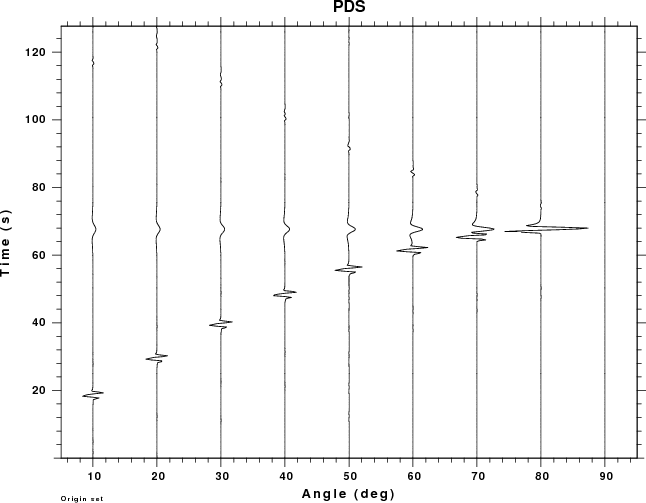

The velocity model format used in Computer Programs in Seismology has long had the provision for conveniently incorporating a layered atmosphere from the viewpoint of having the source or receiver depth of 0 km be at the air-solid interface. This is accomplished by the use of negative layer thicknesses to indicate layering above a reference datum, usually the surface of the earth.
The computational codes use a coordinate system with the z=0 corresponding to the top of the model, and positive z corresponds to greater depth. With the convention of layers above the datum used in the model formats, the synthetic seismogram codes does the book keeping necessary to convert the user view to that required for computation.
As an interesting exercise, we will consider the wavefields generated in the air (pressure field) and in the solid (velocities) from point explosion sources in the air and solid. In addition the pressure field in the atmosphere is also computed for various dislocation sources.
The positions of the sources (small red dots) and receivers (large blue dots) are shown in Figure 1. Although in actuality observations are made at the surface, the framework indicated here could be used to drive detailed atmospheric models. To predict pressure fields at large distances, ray theory may be the most efficient technique for high frequency signals, since the computational effort inherent in wave-number integration would be too great. So the idea here is to prototype the expected pressure signals on a hemisphere about the source, and then eventually to use a representation theorem to uses these motions as input to a ray theory or other numerical technique.
The receivers in Figure 1 are at a distance of 20 km from the coordinate system origin (the intersection of the vertical and horizontal axes). For position in the air, only the pressure field will be measurable, while at the surface, pressure and ground motions can be determined.
| Fig. 1. Distribution of
receivers (blue) and sources. The receivers are at
radial distance of 20 km from origin. The sources are at
depths of -1, -0.5, 0, 0.5, 1, 2, 3, 4 and 5 km. The
negative source depth indicates a source in the air. |
MODEL.01
Simple Crust Atmosphere model
ISOTROPIC
KGS
FLAT EARTH
1-D
CONSTANT VELOCITY
LINE08
LINE09
LINE10
LINE11
H(KM) VP(KM/S) VS(KM/S) RHO(GM/CC) QP QS ETAP ETAS FREFP FREFS
-40.0000 0.3000 0.0000 0.0012 0.00 0.00 0.00 0.00 1.00 1.00
40.0000 6.0000 3.5000 2.8000 0.00 0.00 0.00 0.00 1.00 1.00
Here you can see the use of the negative depth to indicate that a user specification of a source depth of 1 km means that the depth in the internal model will be 41 km from the top, or 1 km into the solid. Note that this model is just used for testing. The density of air at sea level is about 0.00129 gm/cc.
The processing is performed with the script DOIT and the graphics by the script DOFIG in the sub-directory FIGURES.
The DOIT script treats the model as two halfspaces which means that there will be no returns from the top and bottom interfaces.
the first example considers the pressure field measured in the atmosphere at an angle of 80 degrees measure from the horizontal. The observation is at a distance of 3.473 km and an elevation of 19.696 km. The plots shown below present the Greens functions for a moment of 1.0E+20 dyne-cm. A relative amplitude scale is used.
Since dislocation sources cannot occur in the atmosphere, the plots for the PSS, PDD and PDS Greens functions have no data for negative receiver depths (e.g., in the air).
Focus first on the PEX Green function. For atmospheric sources the signal consists of two pulses, which are the direct signal and the reflection from the solid surface.
If a absolute amplitudes were plotted, the observations for the
buried sources would appear as straight lines because the
amplitudes are so small compared to the wavefield due to an
atmosphere source (for an explosion). For the PEX Greens
functions the largest negative amplitudes are -0.07, -0.07,
-2.9E-07, -1.38E-07, -7.73E-08, -4.01E-08, -3.53E-08, -2.99E-08
and -2.73E-07 for source depths of -1, -0.5, 0, 1, 2, 3, 4 and 5
km. This lower amplitudes for the buried source can be understood
from ray theory for which the spectral amplitude should vary as
Mo/([4 π ρs αs3
]5/2 [ρs αs / ρa
αa ]1/2) for an explosion source
in the solid observed in the atmosphere, and
Mo/[4 pi ρaαa3
] for an explosion source in the atmosphere and observed in
the atmosphere.
The ratio of the amplitudes is just
([ρsαs3
] / [ρaαa3
])( [ρaαa / ρsαs
]1/2), which is factor of about 1.1E+6,
which is the difference in the amplitudes shown in the second
figure.
|
|
This example considers the pressure field at all sensors in the
atmosphere, whose location is defined by the angle with respect to
the horizontal. An angle of 90 degrees indicates a receiver directly
above the source. In the following set of plots, all traces use the
same scale so that amplitudes can be compared. the larges
amplitude are above the source.
For this set of examples we see two arrivals for small angles.
Focusing on the receiver closest to the surface, e.g., angle of 10
degrees, the first arrival at 14 sec travel time consists of the
P-wave propagating through the solid (about 3 seconds) which then
propagates 3.4 km in air (11 sec). The low frequency arrival at
about 68 sec is due to the air wave generated by the surface
deformation above the source.
|  |
|
|
|
{kind=link}
{kind=link}
{kind=link}
{kind=link}
{kind=link}
{kind=link}
{kind=link}
{kind=link}
{kind=link}
{kind=link}
{kind=link}